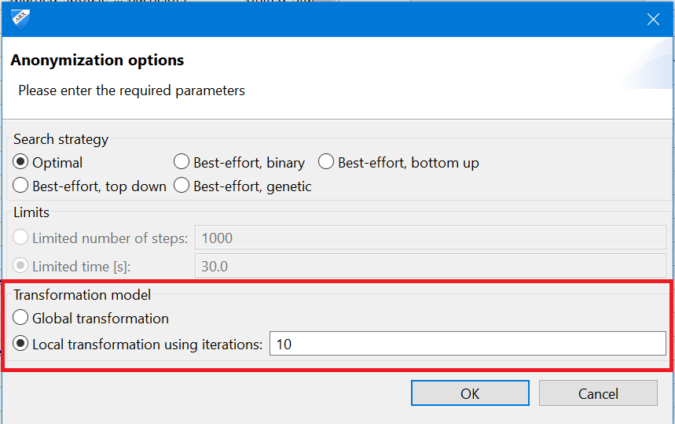

This option enables users to perform local transformation (involving multiple transformation methods, e.g. generalization and aggregation) to further enhance the quality of output data obtained via a primary anonymization procedure. The option can be acceessed via Edit > Anonymize.
It is recommended to perform primary anonymization using a suppression limit of 100% and a configuration which favors suppression over other types of data transformation. The latter can be configured by moving the slider in the "coding model" of the configuration perspective to the leftmost position. Then, local recoding can be performed with various methods.

ARX will perform local recoding by recursively executing a global transformation algorithm on records that have been suppressed in the previous iteration. With this method, a significant improvement in data quality can be achieved, even in comparison to other local transformation algorithms. Moreover, the method supports a wide variety of privacy models, including models for protecting data from attribute disclosure.
Please note that local transformation is supported more explicitly since version 3.7.0 of ARX.